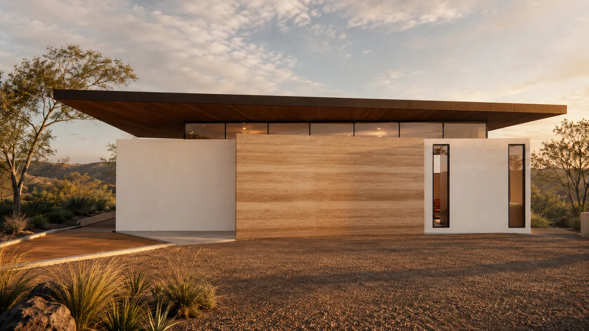
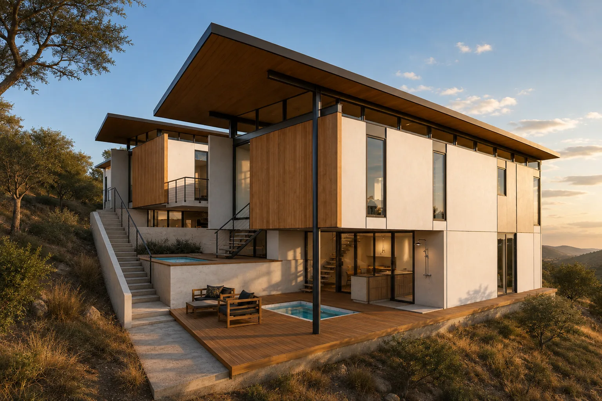
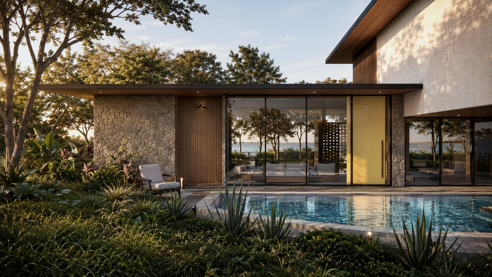
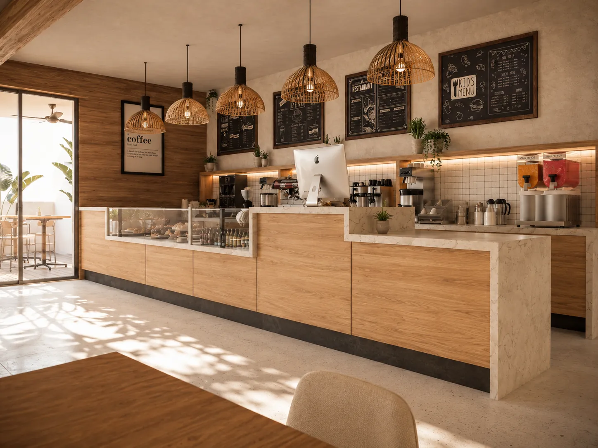
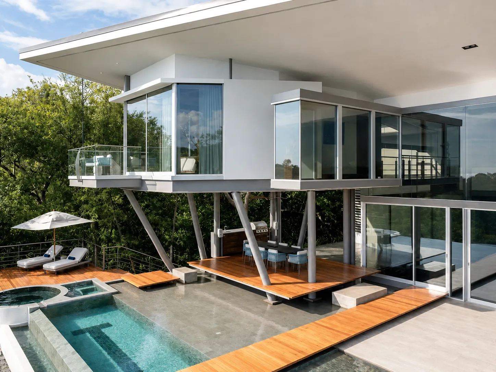

What webelieve
Five ideas we hold to on every project, from a bakery in Tamarindo to a hotel in Playa Negra, each with the reason behind it.
Climate
The climate draws first
Before there is a floor plan there is a sun path. We note where the afternoon sun hits, where the breeze comes from in the dry season and where the water runs in the rainy one, and the house takes its shape from that.
A house that needs air conditioning all day was designed for somewhere else. Deep roofs, shaded glass and rooms open on two sides use less power and are easier to live in.

Place
The lot is the brief
We walk every lot twice, in the morning and in the afternoon, before drawing a line. The slope, the big trees, the rock, the view and the neighbours decide more than any style does.
The lot is the one part of a project that cannot be changed later. A house that follows the slope moves less earth, keeps more trees and sits better on the hill.

Time
Built to age, not to wear out
Salt air, humidity and six months of rain are hard on any building. We choose materials that age instead of wearing out: teak, board-formed concrete, local stone, steel galvanised for the coast.
A house is lived in for decades and its maintenance is paid every year. We would rather spend on the roof and on the details that keep water out than on finishes that look tired after two rainy seasons.

Detail
One set of drawings, from the roof to the shelves
We draw the inside with the outside: kitchens, built-in furniture, lighting, the handrail and the joint where the timber meets the stone. The same materials run from the facade to the shelves.
Most of what people touch every day is a detail. Details left to be solved on site get solved in a hurry.

Clarity
No surprises in cost or time
Building in Costa Rica has its own order: land use, then design, then permits through the CFIA and the municipality. We follow it, we tell you how long each step usually takes, and every stage ends with drawings you approve.
Design fees are quoted per project, in writing, after the first meeting. If we are not the right studio for your project, we say so at that meeting.
